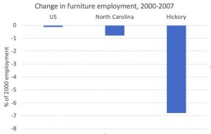

It’s impossible to avoid misjudgements in life or to get all one’s predictions right. But should economists get caught out quite so often.
https://youtu.be/rWQ3jCURzy0
Paul Krugman is honest and self-critical. So he’s up for identifying what economists missed about globalisation – including himself.
Of course, everyone’s wise in hindsight. Still, Krugman keeps reporting that economists ignored things that were … kind of obvious.
For one person to miss something is a misfortune.
But a whole profession doing it, again and again, seems like carelessness.
I’ve previously locked horns with Krugman regarding his own tolerance of economists ignoring things that were staring them in the face — about which more shortly.
In any event, Krugman was in Melbourne recently to give an informative and enjoyable lecture in Max Corden’s honour (watch below).
One of his central points was to defend trade theory against ignorant critics.
As he pointed out, although some critics accuse economists of arguing that free trade is good for everyone, that’s not economics speaking, but certain economic zealots pushing a barrow.
Standard trade theory suggests that freer trade will generate winners and losers. If imports decimate an industry, investors and workers in that industry will suffer harm. This is inter-industry trade expansion such as we've seen in Australia recently with increased imports of cars wiping out Australian car manufacturing, paid for by increased exports — mostly of iron ore and other primary commodities.
This was the trade that was implicit in economists’ models. But as Krugman points out, economists started realising that something else was going on from around the 1960s on.
The fog of clear thinking
Turns out Krugman blames clear thinking.
If you think clearly — well you kind of just miss stuff. And it turns out that this clear thinking — which, of course, all your best colleagues are doing — leads them to miss stuff too. Even more worrying, they miss exactly the same stuff.
Here’s Krugman explaining how economists twigged to new realities of trade from the 1960s on:
"If you look at where trade was growing, it was growing within Europe at the time and between countries that look quite similar. It was intra-industry trade among similar countries.1 What was that about? Actually, that was an interesting thing because it was really very hard for people to … It was very hard for economists with formal models to even talk about that. For a while there, there was an advantage to not being, not thinking too clearly because if you didn’t think too clearly you could say, “Oh yes, obviously there’s advantages of large-scale production and you can produce a smaller number of products at large scale, export those, import other stuff.” But then economists would say, have you modelled that in general equilibrium? How do I handle the market structure? I can’t do that so it must not exist. Well, actually, we managed to pull that together." (Emphasis added).
I’ll expand on the invisibility of intra-industry trade shortly, but Krugman is on his way to explaining another disappearing trick.
As he argues, just after his own ‘new’ economic theory of trade and geography made it possible to ‘see’ intra-industry trade, a kind of intellectual Murphy’s Law intervened. Just as the discipline was coming to understand what was really going on ... what was really going on changed.2
The 1990s saw the transition from Pax Americana to Pax Sinica, with the most populous and fastest growing country in the world, China, exporting its way to prosperity. And this intensified inter-industry trade with all its disruptive potential.
But isn’t it kind of obvious that, once China gets in on the act in a big way, the magnitude of things is going to change and that, with China’s very different labour costs, a lot of the trade expansion will be inter rather than intra-industry trade?
There was a further problem.
As we’ve known since at least the early 1900s, when Alfred Marshall documented it, manufacturing industry is very regionally specialised. So that means that, even where impacts are small at the national level, they can be very damaging for specific towns and regions — as it was for Hickory, North Carolina faced with a surge of Chinese furniture imports.

Krugman acknowledges his own failure to anticipate this.
"Having been a participant in a lot of the debates about trade and wages in the 90s I can say … I certainly missed … I wasn’t thinking at all about the dynamics of rapid change."
So good on him. And I’m not particularly critical of him for not foreseeing it. He’s a busy guy writing two op-eds a week — #Srsly! — but he only does that in his spare time. His main job is thinking about stuff, and he happened to be thinking about other stuff. No-one can think about everything.
One can't ignore the dynamics
But I am critical of him for his continuing complacency about his profession.
Note how he says he and his fellow economists weren’t focusing on dynamics. Well, it was those dynamics that the community was anxious about — they’re really everything in the political discussion of trade. Krugman wasn’t thinking about dynamics because he was doing ‘comparative statics’ or comparing one long-run state with a counterfactual long-run state. And that was because that’s how trade theory has been built.
That great prize of modelling imperfect competition in ‘general equilibrium’, for which Krugman got another Great Prize, wasn’t the most important thing we needed to know about trade. Indeed great economists of the past had warned us it was unlikely to tell us much — warnings which were vindicated in hindsight. But that was what floated the discipline’s boat.
As Keynes famously said regarding similar problems in macro-economics (and some readers may not be familiar with the whole quote):
"The long run is a misleading guide to current affairs. In the long run, we are all dead. Economists set themselves too easy, too useless a task if, in tempestuous seasons, they can only tell us that when the storm is past the ocean is flat again."
It seems to me all this is entirely forgivable for any one person. That’s why we have professions. And if a profession is too myopic, that’s why we have other professions. And if those professions are too myopic, that’s why we live in an open society. If it’s commonsensical, someone will point it out. But here it turns out that, for Krugman none of these resources was available.
Reflecting on whether or not economists should have considered the dynamics of change Krugman says this:
"I think I can say with a fair degree of confidence that basically, nobody was, that this was just not the way that economists were thinking about the issue. We were thinking … in terms of long-run equilibrium models, which seemed reasonable but was actually missing a lot of what was going on."
So, things that were both obvious when you thought about them even informally, things that were obviously important, about which there was marching in the streets, were invisible. They were invisible to a whole profession and … well, you can’t make an omelette without breaking eggs. I guess that’s clear thinking for you.
To show you this invisibility trick in all its glory, here’s Krugman’s Nobel acceptance speech commenting on his theorising about intra-industry trade and the importance of industry-specific economies and scale and specialisation in driving trade:
"You may think all this is obvious, and it is — now. But it was totally not obvious before 1980 or so — except for some prescient quotes from Paul Samuelson, you really can’t find anyone describing trade this way until after the theory had been laid out in mathematical models."
The plain English version came later:
"And you should bear in mind that economists have been thinking and writing about international trade for a couple of centuries; to come along and say, “Hey, we’ve been missing half the story” was a pretty big thing."
As I wrote in my article on Krugman’s reaction to my speech launching Max Corden’s memoirs:
For all his brilliance, I’m repeatedly shocked at Krugman’s complacency regarding his own discipline.
What could Krugman possibly mean when he tells his Stockholm audience that “the plain English version” came after his theory?
What’s his response to the list I mentioned in my speech?
- Hicks (1959)
- Linder (1961)
- Elkan (1965)
- Vernon (1966)
- Balassa (1966)
- Drysdale (1969)
- Grubel (1967)
- Gorden (1970)
- Lloyd (1975)
- Bhagwati (1973)
- Gray (1976)
- Krueger (1978)
I’m genuinely baffled, given Krugman would be familiar with most if not all these authors.3
There were plenty of canaries in the coal mine regarding the China Shock. They just weren’t giving seminars in the economics departments of the Ivy League. All of this reminds me of Robert Solow’s devastating observation, “Sometimes I think it is only my weakness of character that keeps me from making obvious errors”.
Solow was a passionate believer in an older style of economic thinking, in which formal analysis developed in close dialogue with — and ideally was enveloped by — close discursive reasoning, though in the passage just quoted he was speaking about the pull of left and right-wing ideology.
Still, sometimes I think it’s Paul Krugman’s and his professions ‘clear thinking’ that leads them to make obvious errors — at least until after the event. Then they're quite philosophical about it. The communities devastated by policies they reassured us were benign – less so.
References
- As he pointed out, economists have always argued that even though freer trade can be expected to lead to aggregate gains, it comes with substantial adjustment costs. This is because the standard understanding of trade was that it was driven by comparative costs. And this was always understood to involve expanding inter-industry trade. Thus Australia would export more coal, wool and iron ore and import more cameras clothes and cars. That’s obviously disruptive for the poor souls employed making clothes and cars (I’m not sure how many cameras we ever made but we probably made Box Brownies at least.) But if Australia exports Commodores and imports Mercedes it’s a very different story.
- As an aside my favourite example of this law is Malthus’s Principle of Population — perhaps we should call it Malthus’s law in his honour. It took until 1798 for someone to come up with an explanation for why human beings stayed close to substance despite considerable growth in economies and in technology — which was that population grew geometrically and would eventually absorb any additional production — which Malthus assumed would grow linearly. This was a very powerful explanation for a stylised fact which applied more or less to the whole of human history. But it was changing just as Malthus cooked up his theory. Today our living standards are around 25 times subsistence — smashed avocado brunch, anyone?
- The only way I can think of to rescue some semblance of sense in Krugman’s assertion is to say that by ‘no-one’ he means no-one who matters. But even this is hard to square with the list. He described Max Corden as a great economist in his lecture. And John Hicks is amongst the greatest economists of the twentieth century. So it’s not even economists in the top draw. It seems like a kind of tautological statement that economists who thought about trade in a particular way didn’t see it.
{kind=link}
I sometimes seriously consider the proposition that social scientists at universities should see their incomes reduced every time they publish with a recognised journal or book publisher. I suspect we'd end up with better teaching, more policy engagement, and even with better social science. hmmm.
Taking on Kruggers again. Brave man. Really interesting article
If you look at the international business literature it is full of models from the '60s on (Vernon, Buckley & Casson, Dunning, Rugman et al) that were focused on firm behaviour not macro-level trade theory. They started looking at Ownership, Location and Internalisation Factors to explain the Foreign Direct Investment (FDI) process and over time narrowed these down to Firm Specific Advantages v Country Specific Advantages. At all times, firms looked at the Product Life Cycle from dimensions such as market size, production costs, transport cost, intellectual property rights (Williamson) etc.
I worked in China during the 1990's and interviewed some German firms like BASF who had gone through many phases of the market entry strategy from the early 1980's (marketing office, multiple J-V production arrangements to full FDI) based on the changing laws of the land, the development of the host market and the human capital available to them in the host country. These firms saw the long term potential of China from firstly a low wage country for production and exporting to a maturing market that would eventually consume their products. Being a part of a Big Market was their end game.
Economists didn't want to see what was happening at the firm level. The firm level decisions required long run investment options that were going to take many years to pay off. Krugman mentioned that Japan and Korea make up a lot of the value adding going on in China but there are an array of European and American companies that also made Product Life Cycle decisions in the 1980's that led to the exponential nature of Pax Sinica. Low wage nations were always going to play their part in the trade story because global competition meant firms had to move their production facilities off-shore to remain competitive. Eventually knowledge-based service firms would do the same.
Nicholas
Great article and really important question that of ‘seeing’. My thoughts are:
- seeing is not a binary thing. There is a whole literature on this in philosophy under the title of self deception. To deceive ourselves, a very common phenomenon, we have to see and not see at the same time in that in some sense we need to see something in order to know we have to avoid seeing. Think chuck holds and the comment ‘at some level they knew’.
- I think individuals are actually likely to be better at seeing than groups or professions as membership of the groups requires certain blindness. So humanity is generally in denial of climate change and it is rude to mention this reality in public space. Think of the term ‘bad form’. The question is then whether the requirements of blindness in different groups is more or less disfunctional.
- so I would suggest the argument is that the economics profession due to the group requirements to only really see stuff that fits their theoretical beliefs makes them exceptionally blind. And as these are challenged, they are likely to hold even faster to them and become blinder. Any group under attack demands more absolute loyalty hence the rise of racism in an increasingly threatening world is argued by evolutionary psychologists.
- in this regard it is very interesting how behavioural economists have accepted blindness in exchange for space in the economics profession. If they want to keep their space, they cannot explore the systemic implications of ‘irrationality’ and must regularly uphold the validity of rationality ‘in most situations’, and much more. Otherwise they would be considered ‘rude’ and expelled as a threat to the profession. Of course a few exceptions are always tolerated as long as they are seen as that and not too dangerous!
So I would any promoting economic pluralism is challenging the requirements to be blind and supporting a group that can see more ie has less dysfunctional blindness.
Cheers
Henry
Of course the ability to be blind is crucial. Firstly we can never ‘see’ everything anyway. Secondly we don’t want to see things that are might require us to change and we do want to see things that support our life choices. For groups communal blindness is even more important as a binding agent. Better to be wrong together than right alone in terms of survival. It worked for the banks!
Nicholas This might I hope be a dumb question. Re long term results, do you mean that economists ignore the qualitative effects of variations in rates of change? For analogy, the quality of experience for the occupants of a car that gradually slows to a stop vs the experience for the occupants a car that slows to a stop in a few seconds are pretty profound .
I agree, this blindness stuff is important. I used to call myself a behavioural economist until the meaning of that term radically flipped such that they no longer challenged for the cake, but were sucking up a few crumbs that fell off the table.
One might say that mainstream economics had decided that humans were actually fish and that one for any problem should ask the question what a fish would do. General equilibrium was then about what shoals of fish would do.
The first behavioural economists considered the radical idea that humans were actually apes, but the current crop has agreed that humans are indeed fish, though with 200 heuristics that make them rather peculiar fish. As a result, they also start out asking what a fish would do, after which they work through a check-list of things that might lead to a bit of non-fish behaviour.
It really is bizarre.
Unfortunately, I think, behavioural economics emerged at a time when mainstream economics seemed impregnable so they thought they had to fit in. Maybe if they had risen up post crash, they may not ha e felt the need to conform. Now it is maybe too late to change tack and they have become part of the problem.
How's Krugman's prediction the US economy would go into a tailspin with the election of Trump in 16 working out. Anyone have any idea? How about his Russiagate prediction?
Nassim Nicholas Taleb Retweeted Greta Van Susteren
Paul Krugman @paulkrugman remains the best argument for the suspension of the "The Sveriges Riksbank Prize in Economic Sciences in Memory of Alfred Nobel".
An enjoyable video even if it did not go very deep.
I think standard trade theory got it exactly right and that it was the vulgarizers of trade theory (especially thev Libertarians but also vulgarizers on the left) that got it wrong. Free trade provides overall gains but is not a Pareto improvement in welfare. This isn't elaborate theory but what is (or should be) taught too first year - an autarchic economy that becomes a net exporter costs local consumers but advantages producers more etc etc. Two identically endowed islands one having free trade the other not will result in higher correctly compensated welfare in the long run for the country with free trade. Even with dubiously realistic compensations this ignores the adjustment process - employment dynamics etc etc. The case for free trade has always been strongly conditional and none of the recent income distributional impacts should surprise.
Many economics departments these days do not teach courses on trade - instead they have misleading "practical" courses on globalization where people make wrong judgements on the basis of inaccurately presented theory.
Something important is going on with this article Nicholas, but I am not exactly sure what. You have identified a serious problem. On the other hand I don't find your discussion of the causes convincing. For example you express surprise at Krugman's statement about the plain English version of a theory coming after a formal model. I don't see an issue here. There is a trivial sense, of course, in which all of mathematics can be stated in plain language but I don't think you mean that. In general terms I think Krugman's statement captures something of the process. I wouldn't publish a model unless it said something that could not be produced discursively and it often takes quite a while to work out why things take the form the mathematics says. I think my point is that it is not constructing mathematical theories that is the important thing here - although bad modelling probably is. I also think some of your other stuff on institutional constraints seems to offer a better story.
You mean the call he retracted within 48 hours?
By long-term results I mean results in the long-term.
Economists focus on the long-term as comparative statics ignores adjustment and just says that with some change eventually the world will look like this – without specifying how long or how the adjustment will occur.
That's how the models work.
Thanks Alex, but I can't understand your last paragraph. I'm not fussed with mathematics. Mathematics can be useful.
I do mention that Krugman's new trade theory was comparative static so it didn't tell us about adjustment and that no attention was paid to warnings of people like Hicks that for understandable (mathematical) reasons formalising imperfect competition would end up with ad hoc closures that would leave one none the wiser. That's what happened.
You can't blame Krugman and others for trying – I only blame them for never seriously discussing Hicks' point along the way – that's my idea of responsible and rigorous science.
On seeing the problem of Hickory, Krugman could have done so, but didn't. That's fair enough – we don’t' all focus where it's easy to point out from hindsight we should have – even with our own view of the world.
My only real objection is this: When Krugman says "everyone else was doing it" he never says "so much the worse for everyone". It's as if it's a knock down drag out argument that no-one's to blame. I've been saying "so much the worse for everyone" since I came across intra-industry trade in a practical context. It was obvious to me long before I studied any economics – though I had a feel for it. It was obvious to Commissioner Bladen in 1960 in Canada. It was even obvious to economically illiterate and careless Malcolm Fraser. But apparently it was necessary to shoehorn into the Procrustean assumptions of the Dixit-Stiglitz model for economists to see such things.
So much the worse for them.
Stock standard Gruen reply when he does understand what you're saying.
Thanks Tumble – would you care to translate? (The paragraph I'm saying I don't understand)
Here's Krugman's hands in the cookie jar again. (My emphasis)
"[Brian] Arthur seemed unaware of the conceptual difficulties that had led economists not to ignore but to downplay the idea of increasing returns".
This is said without any comment on the idea of 'downplaying' something you know is important but can't pacify to your formal method.